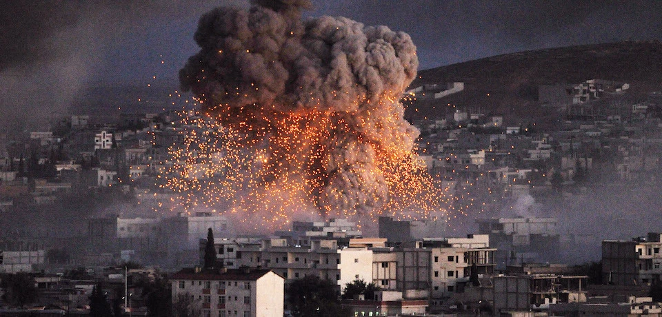
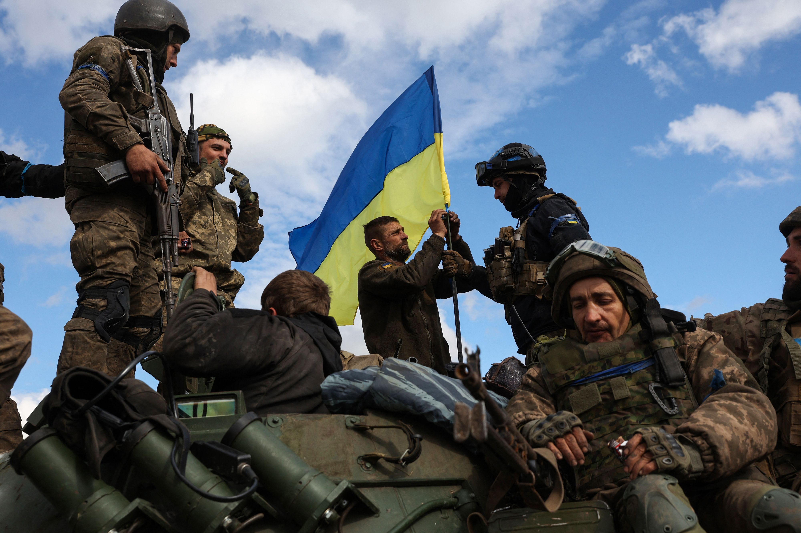
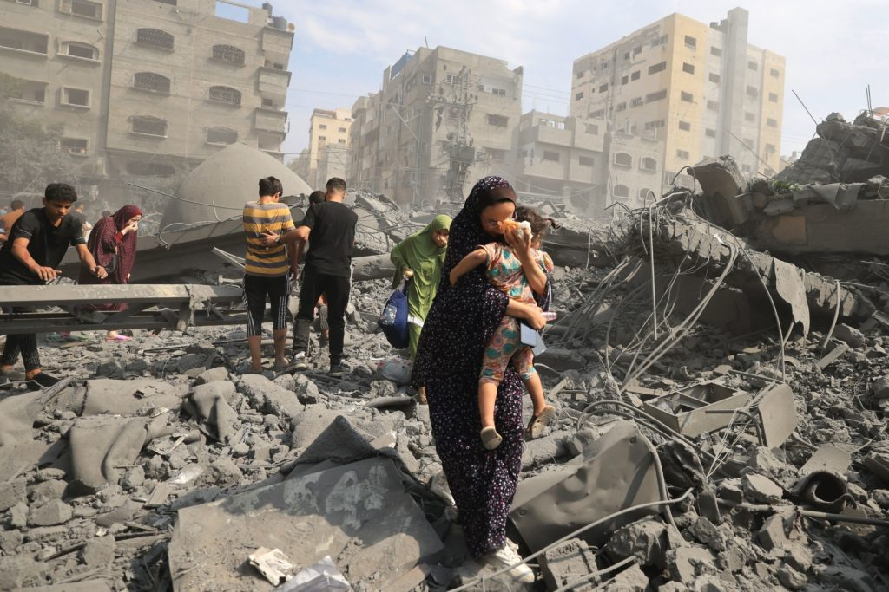

Ma ehi... sappiamo davvero cosa sia la guerra?
È un po' come quando ci sono delle grandi liti tra persone, solo che invece di risolverle parlando o
cercando un compromesso, le persone coinvolte scelgono di risolverle con la forza. Immaginatevi grandi
gruppi che si sfidano come nei film, ma nella realtà, purtroppo, è molto più serio e pericoloso
La guerra è un grosso temporale che arriva all'improvviso e porta con sé tanta confusione, paura e
disordine. E al contrario di un temporale che passa e lascia il cielo sereno, la guerra può
lasciare cicatrici profonde e tristi nelle vite delle persone coinvolte.
Quindi, anche se può sembrare avventuroso nei film o nei videogiochi, beh... nella vita non è così.
Ma cosa può spronare a così tanta violenza?

Ecco una domanda che siamo portati a porci quando osserviamo a così tanto male e guerre nel mondo.
La violenza è un fenomeno DAVVERO DIFFICILE, che può essere alimentato da una serie di profonde
motivazioni...
tra di esse, la mancanza di risorse, le disuguaglianze sociali, le divergenze politiche e ideologiche, o
semplicemente l'incapacità di risolvere i conflitti in modo pacifico.
Talvola, il solo desiderio di
avere più potere tra le proprie mani può portare a questa violenza.
Caro lettore, ricorda sempre. La violenza non porta a niente.
Evidentemente non abbiamo imparato dai nostri errori. Dalle due guerre mondiali e dalle altre centinaia di altre guerre.
Ahimè...
Ricordiamo con maggior sofferenza la guerra in Ucraina e la guerra tra Palestina e Israele.
Guerra in Ucraina. 2022 (Clicca per saperne di più)
Guerra tra Palestina e Israele. 2023 (Clicca per saperne di più)
Affrontare un tema così delicato può portarci in un territorio carico di emozioni. Trasportiamoci al
centro di un nucleo di paura, tristezza e incertezza. Le persone coinvolte, dalle famiglie in fuga ai
soldati sul campo di battaglia, vivono quotidianamente un mix travolgente di emozioni.
Per quanto si possa criticare l'Italia...
noi non sappiamo cosa significhi avere di morire
prima di andare a dormire.
Noi non sappiamo cosa sia una sirena anti-aerea.
Noi non sappiamo.
Ma le persone coinvolte in questo conflitto, persone innocenti, soldati, mamme, papà, figli... zii... nonni,
cugini! Loro sì. Loro sanno cosa siano.
La paura è un compagno costante per queste persone che sono direttamente colpiti dai combattimenti.
La costante minaccia di violenza imminente genera un senso di terrore pervasivo, che si insinua in ogni
aspetto e momento della vita quotidiana di queste persone. Le famiglie si trovano costrette a fare scelte
difficili per proteggere se stesse e i propri cari, con l'incertezza sul domani...
Le comunità devastate dalla violenza e dalla distruzione affrontano una lotta costante per il superamento
del dolore e il recupero delle proprie vite. Ogni distruzione materiale porta con sé un senso di perdita non
solo dei beni materiali, ma anche di legami familiari, tradizioni e senso di appartenenza.
Ma ora, basta chiacchere. Guardiamo i fatti. Guardiamo la realtà.
Papà, Mamme, Nonni, Zii, Cugini, Figli... persone innocenti uccise in questi conflitti fin'ora.
| Terra | Morti | Feriti | Edifici distrutti |
|---|---|---|---|
| Ucraina | 10.000+ | 100.000+ | 250.000+ |
| Israele/Palestina | 20.000+ | 150.000+ | 150.000+ |
Questa è la guerra.

Beh... hai visto?
"Vincere" una guerra non significa vincere. Significa aver ucciso migliaia di innocenti.
Basta. Basta
a tutto questo...